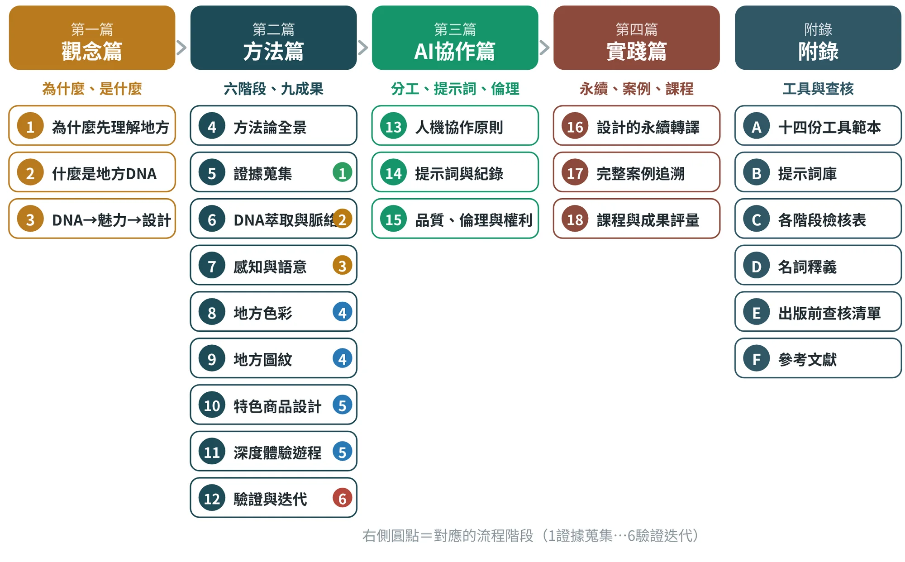

前言：如何使用本書
我們所站立的土地，有什麼獨一無二的力量？
地方的歷史、文化、自然、產業與社會記憶，是構成一個地方靈魂的「地方DNA」。它不是觀念，而是地方的本質結構；不是口號，而是居民世代累積的生命語彙；不是過去的束縛，而是未來創新與永續的根源。
然而，地方DNA若僅停留在資料與故事，就無法帶動行動、無法創造魅力，也無法成為城市的未來競爭力。因此，我主張：以設計為方法、以永續為方向、以在地為根本，讓地方DNA成為新世代的文化動力與生活解方。（張文山，2025）
這本書要解決什麼問題#
許多地方創生專案卡在同一個地方：資料很多、點子也不少，卻說不清楚「為什麼是這個設計」。設計做完了，才回頭找故事；故事講了，居民卻說「這不是我們」；商品上市了，消費者不知道為什麼要買。
本書提供的是一條可以追溯的路：每一個設計決定，都能往回找到證據、語彙與DNA；每一個階段，都有明確的產出與檢核。這條路的口訣，只有十二個字：
貫串這條路的，是作者提出的地方生成式永續設計方法論（LGSD）：以地方為知識源、以轉譯為方法、以永續為方向、以治理為落地條件。它不是額外的流程，而是說明這條路為什麼這樣走的立場，總括說明見3.8節。
全書結構#
全書分為四篇與附錄（圖1）。第一篇先建立問題意識與概念；第二篇是全書主體，依六個階段逐章展開方法；第三篇專談AI協作與品質倫理；第四篇把方法放回地方，說明永續轉譯、完整案例與課程實施。附錄收錄十四份工具範本、提示詞庫、各階段檢核表、名詞釋義、出版前查核清單與參考文獻。本版新增的方法內容，可以依下列位置查找：LGSD見3.8節；十個實作階段見4.3節；研究方法的組合見5.8節；時間軸、利害關係人圖與核心本質句見6.6節；視覺資產的識別治理見9.7節；永續評估四軸見16.6節；治理五層面見18.9節。3.3版新增的九個案例分散在各章：案例地圖與索引見1.7節之後，同一把尺（六道驗證）見3.6節，九張驗證卡見17.6節，概念圖版與生成提示詞見附錄G.3至G.11。

每一章怎麼讀#
每一章都使用相同的版面，讓你能快速找到需要的內容。章首的資訊卡先告訴你本章在流程中的位置、學習目標與關鍵詞；內文依「概念 → 方法 → 步驟」展開；章末是常見錯誤、課堂練習與小結。書中使用下列固定的方塊：
| 方塊 | 用途 |
|---|---|
| 重點觀念 | 本章最需要記住的定義、原則或命題。 |
| 實踐案例 | 來自竹山、崙背、東港、鳥取等地的案例，說明方法如何落地。 |
| AI協作 | 可直接複製使用的提示詞，【 】內換成自己的資料。 |
| 常見錯誤 | 初學者容易犯的錯，與如何避免。 |
| 練習 | 適合課堂分組或課後完成的小作業。 |
| 證據包 | 該階段「最低成果證據包」：做到什麼程度才算完成。 |
| 小結 | 本章要點整理。 |
| 名詞 | 專有名詞的簡明解釋。 |
三種讀者的閱讀路線#
| 讀者 | 建議路線 | 重點使用 |
|---|---|---|
| 研究生（修課） | 依序通讀；第二篇每章完成「最低成果證據包」 | 各章練習、附錄A工具範本、附錄B提示詞庫、第18章評量 |
| 地方工作者 | 第1章→第4章→第5、6章；再依需要挑選第8至11章 | 附錄A範本、附錄C檢核表、第15章倫理與權利 |
| 授課教師 | 第1至4章建立共同語言；第18章規劃課程 | 第18章16週課表與評量；各章練習與案例 |
學習建議#
- 先問「為什麼」，再問「做什麼」。 每一次想直接畫圖、做商品時，先回頭看證據。
- 做一份，留一份。 每個階段都留下來源、日期、版本與決策理由，這是本書所說的「可追溯」。
- AI是夥伴，不是證據。 讓AI幫你整理、聚類、發散與模擬，但地方事實、文化詮釋與最後決定，永遠由人負責。
- 讓地方檢核你。 居民、保存者與使用者的回饋，不是最後一關的禮儀，而是方法本身的一部分。